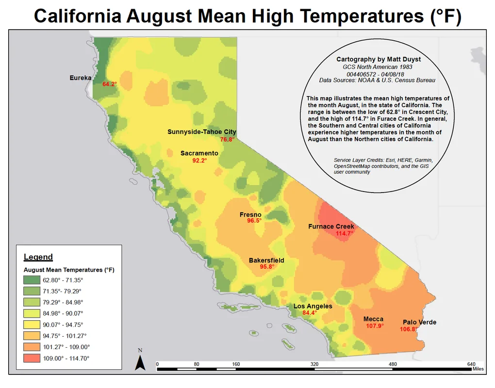
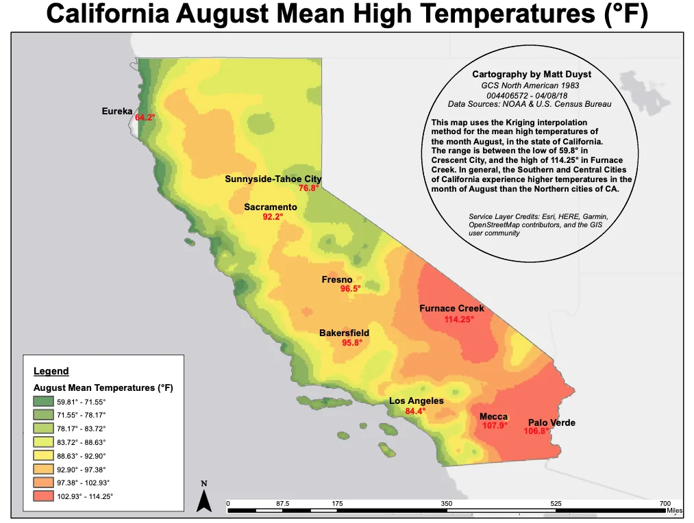

UCLA coursework, 2014 to 2018
Statewide Precipitation Averages: California
Abstract:
The analysis of statewide precipitation averages between two extremes - January (high) and August (low) - allows for an examination between two forms of Interpolation: IDW and Kriging. These differing methods of simulation grant a better understanding of how the same data values can be altered through representation. This project also highlights California's Mediterranean Climate; the state experiences its peak temperatures during the summer months (like August), and vast periods of coolness during its winter months (January).
Methods:
Temperature values in California for the months of January and August were accessed from NOAA. The provided CSV was then added into ArcGIS as XY data. The IDW interpolation method and Kriging interpolation method were then used to see which simulation did a better job at classifying the state's precipitation ranges.
Results:
IDW Interpolation Mapping:


Kriging Interpolation Mapping:

Conclusion:
This study allowed for juxtaposing months' temperature values in the state of California to be witnessed. The temperature range of January was between 36°F and 72°F, while the range for the month of August was between 62°F and 114°F. January’s lowest average temperature was in Sunnyside-Tahoe City (39°F), and the month’s highest average temperature was in Mecca (72°F). This follows the trend of Northern California having a cooler climate than that of Southern California, where the contrasting cities reside. August’s lowest average temperature was in Westhaven-Moonstone (63°F), and the month’s highest average temperature was in Furnace Creek (114°F).
The first two maps utilize the IDW interpolation method to create a quantile-based representation of temperature. In my opinion, the final map using the Kriging Bayesian method is more suitable for representation. When switching the Kriging method, the range of temperature in the month of August was adjusted from 62°F to 59°F. Although a change in 3°F may seem miniscule, it has huge implications with regards to climate change. The distribution of temperatures also appears less rigid and lends itself to a cleaner representation.